My contribution
I documented and completed the disassembly, desoldering, switch modification, PCB rework, foam fitting, and reassembly. The finished keyboard was checked across its switches, sliders, and diodes.
Keeping the sound structure. Reworking the experience.
The keyboard’s PCB and case were still functional, but the typing experience was poor. The switches felt inconsistent, scratchy, and sluggish; the keycaps were worn; and the unpadded case sounded hollow and rattled. I wanted to preserve the working foundation while rebuilding the mechanical and acoustic details around it.
The target was specific to my preferences: tactile switches, a stiff and well-supported board, consistent feel, and a fuller sound with more emphasis on the lower frequencies. That meant treating the switches, PCB support, and case interior as one stack rather than expecting a single replacement part to solve everything.
{kind=link}
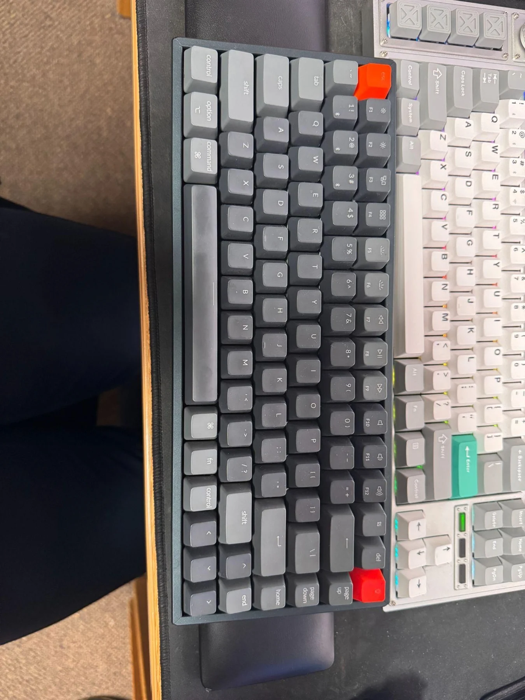
{kind=link}
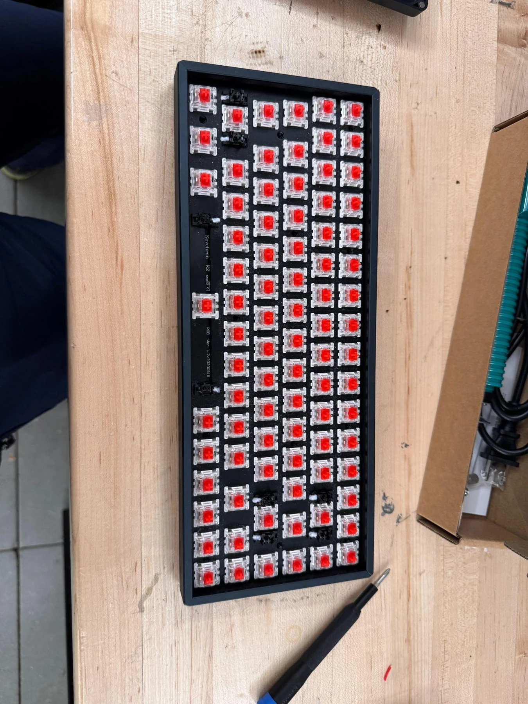
84 positions, 168 pins, and a board worth preserving.
I removed the PCB and plate from the case and desoldered every original switch. With 84 positions and two switch pins per position, that meant 168 solder joints before the replacement switches could be installed. I cleaned the board with isopropyl alcohol and prepared each position for its new switch pad.
Disassembly also exposed the fit constraints that would matter later: the battery, side sliders, screw standoffs, and surface-mounted components all needed clearance after padding was added. The case’s irregular internal geometry made a single rectangular foam insert unsuitable.
{kind=link}
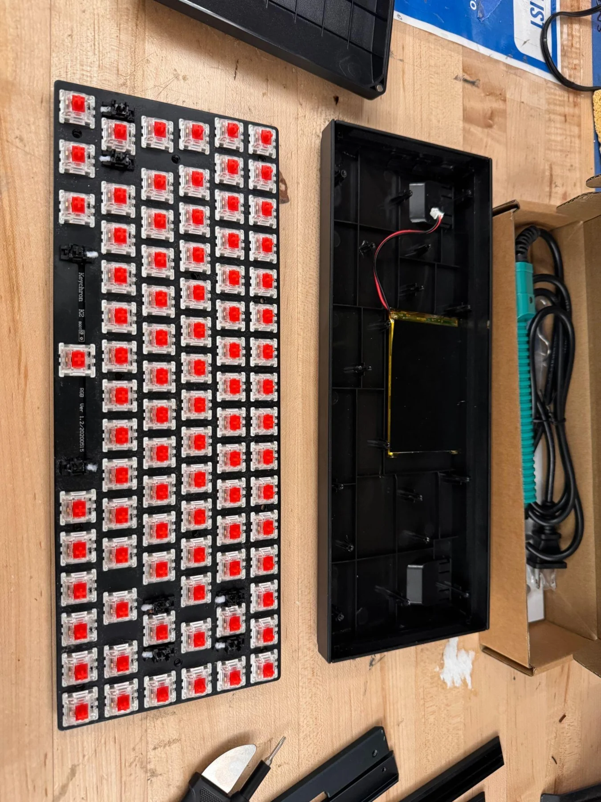
{kind=link}
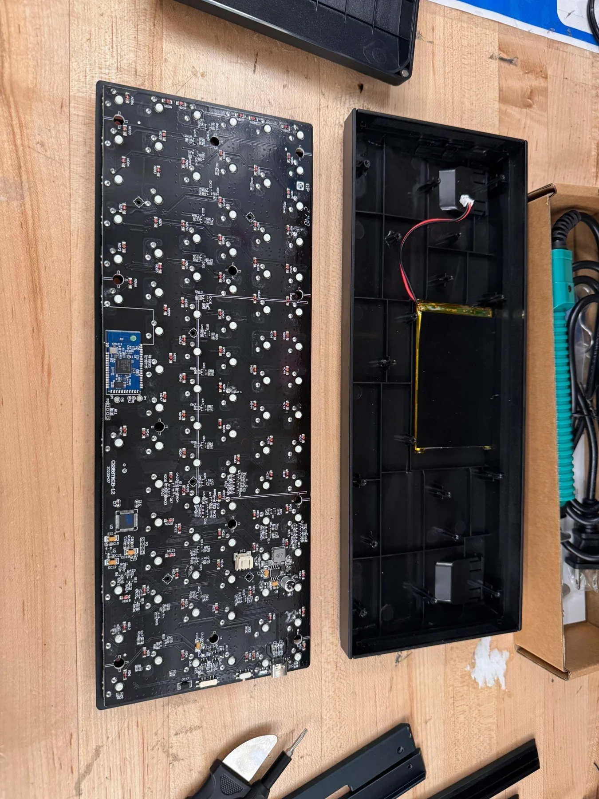
{kind=link}
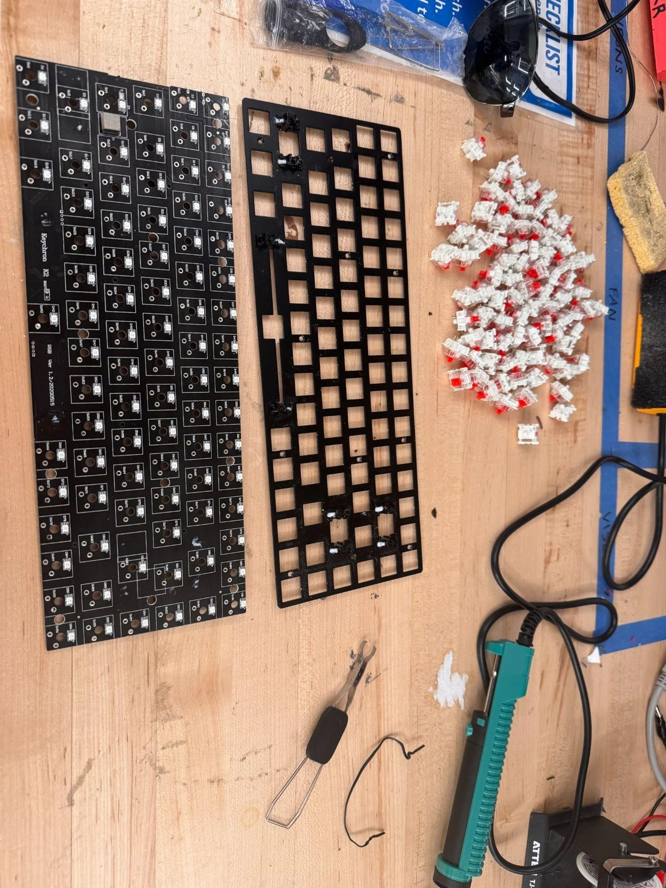
Making a small operation repeatable, 108 times.
I modified 108 replacement switches in batches of 36. Each switch went through six major operations: opening, lubrication, spring replacement, spring lubrication, filming, and reassembly. Breaking the work into batches kept a long series of small manual tasks organized across multiple sessions.
The switch work included lubrication on 14 surfaces, new 63.5 g double-stage springs, and thin polycarbonate films between the housing halves. The aim was more consistent motion and housing fit. A rack organized the lower housings, springs, and stems while the tops were kept together for reassembly.
{kind=link}
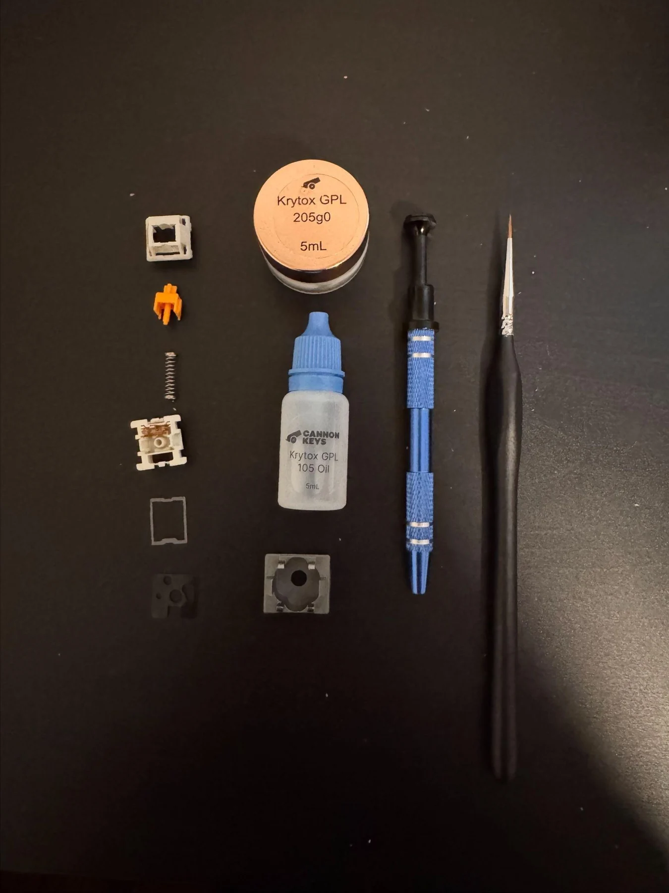
{kind=link}
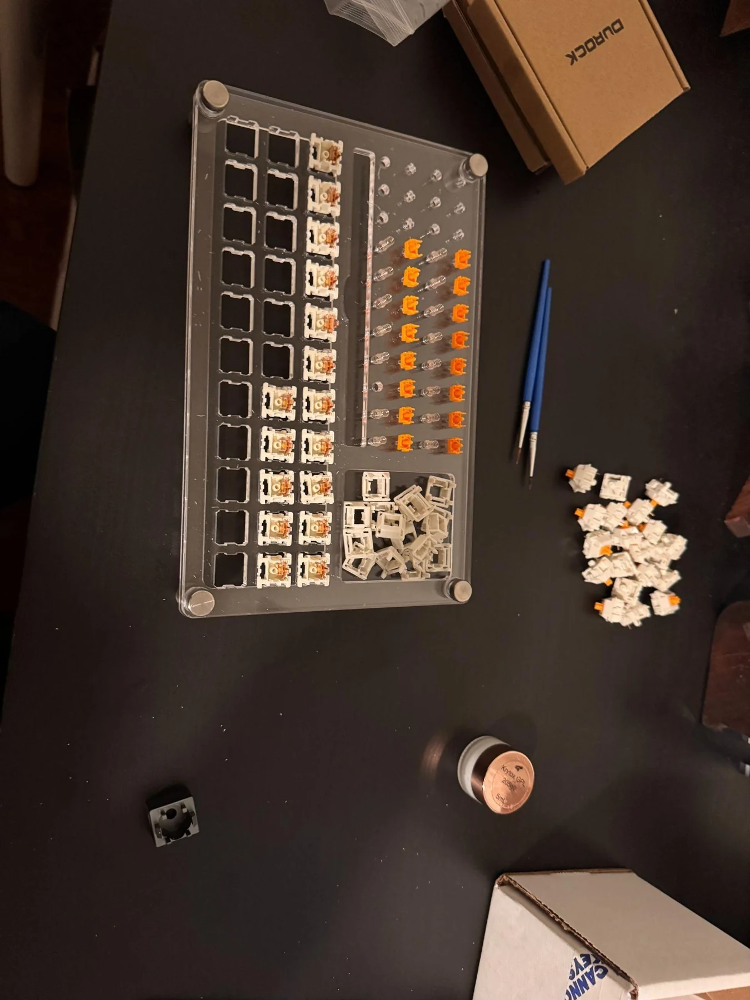
{kind=link}
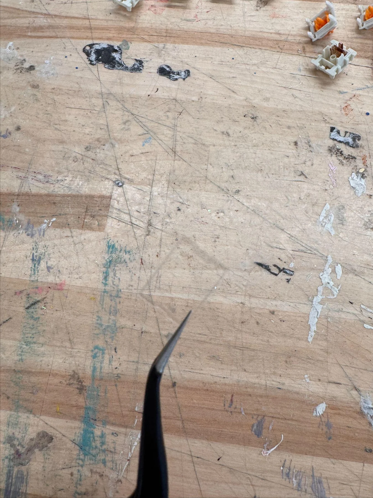
{kind=link}
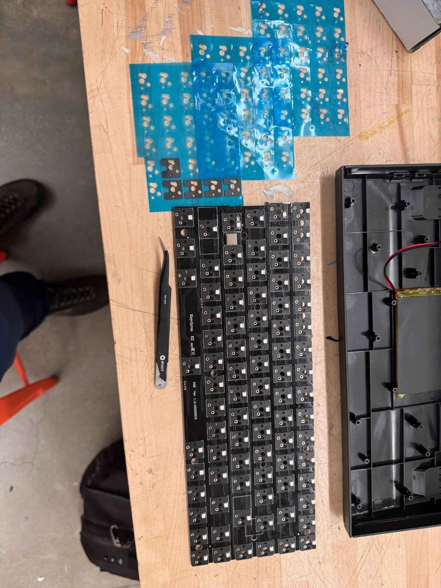
| Operation | Purpose |
|---|---|
| Open | Separate the housing without mixing or damaging the small parts. |
| Lubricate | Treat the contact surfaces for the intended smoothness and feel. |
| Replace springs | Establish the preferred spring behavior. |
| Lubricate springs | Address friction and spring-related noise. |
| Film | Improve the fit between the housing halves. |
| Reassemble | Check stem orientation and film position before closing the switch. |
The acoustic treatment still had to fit.
I fitted poron pads at the switch positions and cut 4 mm EVA foam into interlocking pieces for the case. The foam had to fill useful space while leaving the battery, standoffs, sliders, and electronics unobstructed. Some of the switch pads also needed trimming to fit their locations.
Repeated test fits were necessary because the added material changed the internal stack. I revised the foam around the side controls and surface-mounted components, then aligned the replacement switches with the plate and PCB, checked their pins, and soldered them in place.
{kind=link}
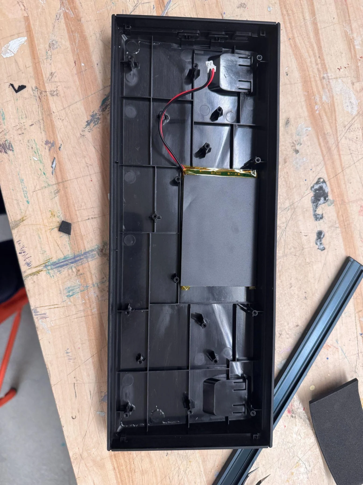
{kind=link}
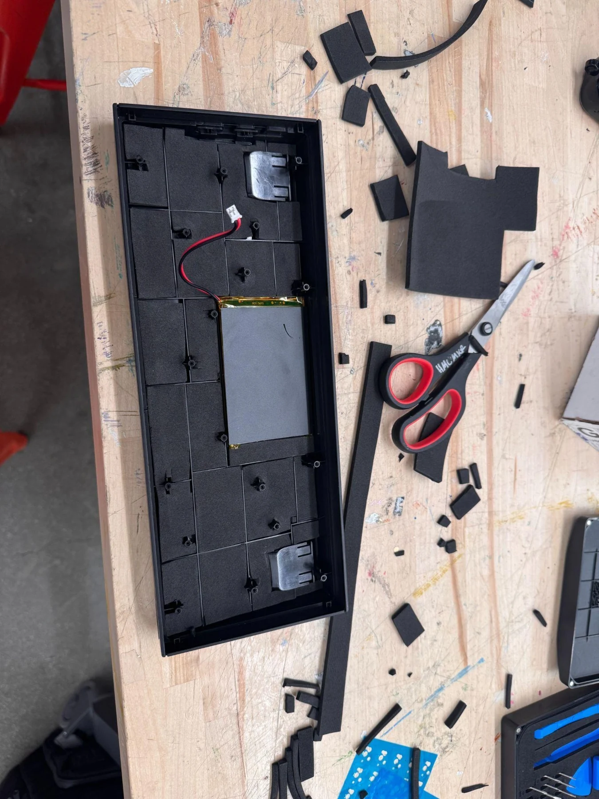
{kind=link}
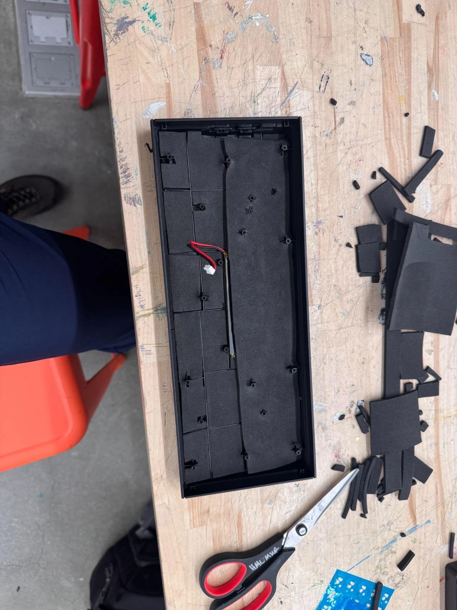
{kind=link}
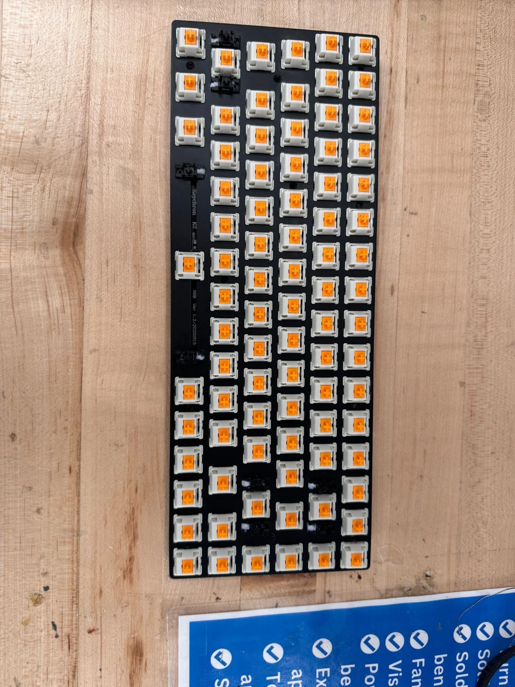
{kind=link}
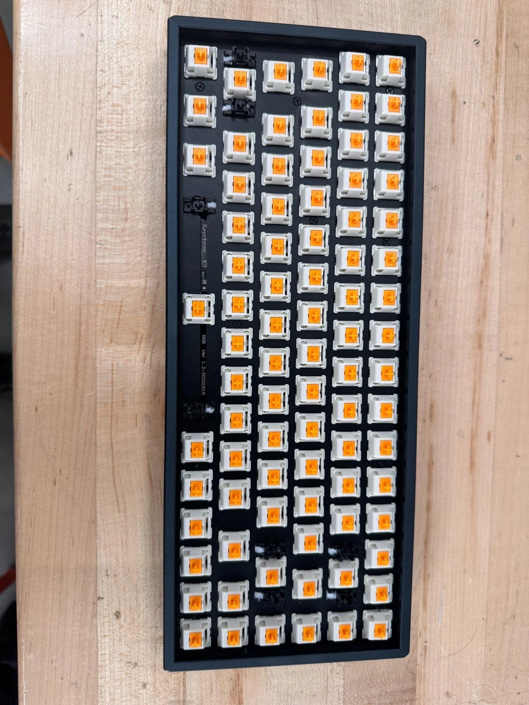
A finished object with the small details resolved.
I reconnected the battery, positioned the sliders, tightened the case, and checked every switch, slider, and diode before installing the new keycaps. The complete restoration cost $189.50 in the documented materials and supplies.
The result was a working keyboard rebuilt around my preferred feel and sound. Those improvements were qualitative; I did not conduct an instrumented acoustic comparison. The documented engineering work is the repeatable switch process, circuit-board rework, clearance management, and final functional verification.
Compared with a rocket or robot, this was a small system. It still rewarded the same habits: keep the existing constraints visible, organize repetitive work, check fit before final assembly, and verify that the finished object works as a whole.
Soldering · Desoldering · Switch modification · Mechanical fit checks
Original build documentation